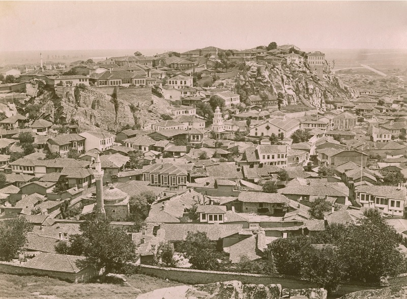

Пловдив
Древен и вечен
География
История
Храмове
Старият град Пловдив
Забележителности
Интересни факти
Развлечения
История
Животът в Пловдив не е прекъснал в продължение на почти осем хиладолетия, което прави неговата история изключително богата и интересна. Сегашният град почива върху останките на много предишни селища, което обуславя богатото му културно наследство. Множеството народи, обитавали територията на града, са оставили следи в дебелите над 12м културни пластове и градежи на Пловдив. 
Най-старите следи от обитаване на територията на днешния град Пловдив са от VI хилядолетие пр.н.е. През 342г. пр.н.е слещето е завладяно от македонския цар Филип II, който му дава своето име – Филипополис, използвано в различните варианти и до днес. По това време градът е обграден със здрави крепостни стени, но към 320 г. пр.н.е. Одриското царство възстановява самостоятелностто си.
През 183г. пр.н.е Филипопол е превзет от македонския цар Филип V, но малко по-късно одрисите си го връщат. През 72 г. пр.н.е. градът е завладян за кратко от римския пълководец Марк Теренций Варон Лукул по времена похода му срещу бесите, но траките скоро възстановяват властта си над града.
През Римския период във Филипопол се строят обществени сгради - театър, форум, съкровищница, храмове, бани, мащабен стадион. С разрастването си градът напуска очертанията на Трихълмието и се разпростира в низината, старите укрепления са построени отново, а през 172г. император Марк Аврелий издига втора крепостна стена, за да обхване разрастналия се град.
2024